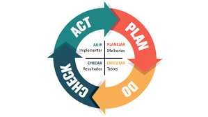

-Como administração seu tempo?
1-Mantenha o ambiente de trabalho organizado
2-Liste suas tarefas e atividades
3-Diferencie o que é urgente do que é importante
4-Tente manter uma rotina
5-Execute uma tarefa de cada vez
6-Use ferramentas de organização
7-Crie métricas para sua gestão
8-Sempre Otimize seu processo.
Prontos para as dicas de hoje?!
1. Saia das quatro paredes Estar sempre no mesmo ambiente, ver sempre a mesma janela, sentar sempre na mesma cadeira ou seja, cair na mesmice — atrapalha o nosso desenvolvimento profissional e intelectual, algo que consequentemente baixa nossa produtividade.
2. Liste suas tarefas Post-its, caderno de anotações, notas do tablet ou celular, não importa a ferramenta: Listar tarefas nos ajuda a ter dimensão do que temos que fazer. É importante que a listagem seja feita assim que começamos nossas atividades.
3. Planejamento Na vida profissional, social, intelectual e em todos os âmbitos, planejamento sempre será eficaz. Um dos segredos de como administrar o tempo é: antes de qualquer tarefa ser realizada ela deve ser planejada.
4. Procure maneiras diferentes para realizar suas tarefas
Nada deixa o profissional mais desmotivado do que agir como um robô, repetindo a mesmo serviço de maneira igual todos os dias. Claro que isso vai depender do seu seguimento mas, na maioria dos casos, sempre existe mais de um jeito de se fazer a mesma coisa.
°Ciclo PDCA

-ciclo PDCA quer dizer, em inglês, PLAN – DO – CHECK – ACT, ou também PLAN – DO – CHECK – ADJUST, que significam “Planejar – Fazer – Verificar – Agir”, ou “Planejar – Fazer – Verificar – Ajustar”.
Trata-se, de uma metodologia. Uma técnica de gestão interativa que consiste justamente nestes quatro passos, e que tem como objetivo melhorar os processos e os produtos de forma contínua.
Primeiramente, é importante entender que se trata de um ciclo. Ou seja, todo o processo é constituído por atividades que devem ser planejadas e praticadas continuamente com o intuito de melhorar o resultado.
E a sequência respeita a ordem da sigla. Assim, tudo começa com o P, o Planejamento, que é o momento em que você deve focar a parte estratégica, levantando informações e analisando-as.
Depois, parte-se para a prática, o D, quando o que foi planejado deve ser executado. E o que foi executado deve, então, ser verificado, ou checado (C); este é o momento em que as ações são avaliadas. O resultado dessa avaliação levará a uma ação ou a um ajuste (A), de forma a corrigir os problemas e as divergências encontradas.
1. PLAN (PLANEJAR)
-Neste primeiro passo para a aplicação do PDCA, como já foi dito, você deve elaborar um plano. A ideia aqui é desenvolver uma estratégia que se proponha a resolver os problemas levantados.
2. DO (FAZER)
-Com o planejamento pronto e detalhado, chega a hora de colocá-lo em prática. Isso implica treinar os envolvidos para prepará-los para o método que será empregado. É a etapa mais importante do ciclo PDCA. Por isso, seu acompanhamento deve ser constante e próximo, para que não ocorram desvios do que foi planejado.
3. CHECK (VERIFICAR)
-O terceiro passo do PDCA é a análise ou a verificação dos resultados alcançados e dos dados coletados. Deve ocorrer após a execução, quando são feitas as avaliações estatísticas dos dados e a checagem de todos os itens. O principal objetivo desta fase é detectar eventuais erros ou falhas.
4. ACT ou ADJUST (AGIR, CORRIGIR)
-Chegamos à última etapa do ciclo PDCA. Nela, são tomadas as ações corretivas com base no que foi verificado. Ou seja, deve-se corrigir as falhas encontradas no passo anterior. Então, após realizada a investigação das causas destas falhas ou desvios no processo e após agir para solucioná-las, comece tudo de novo. Exatamente: como um ciclo, o PDCA deve ser retomado sempre para que as práticas e os processos se aprimorem continuamente.
°Como aplicar o ciclo PDCA?
-Um exemplo prático sempre ajuda. Então, imagine que você precise promover um treinamento contra ameaças virtuais em sua empresa.
Pegue uma folha em branco a divida em quatro partes, cada uma relativa a uma atividade do ciclo. E coloque, em cada parte, atividades correspondentes ao projeto. Por exemplo: “preparar cronograma de treinamento”, no P; “realizar atividades treinamento de combate a phishing, no D; “verificar se os funcionários entenderam os procedimentos” e “medir avanços do projeto”, no C; e “corrigir procedimentos”, no A.
Este é apenas um exemplo, mas as aplicações do ciclo PDCA são inúmeras. Conforme você for implantando a metodologia no dia a dia, vai perceber que ela pode contribuir para melhorar – e muito – os processos da sua gestão.
Todos os direitos reservados ao blog More Productivity 2019 ®
.png)